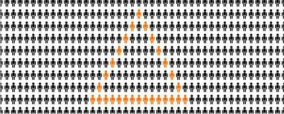

Muita gente acha que é o sobrenome de algum psicólogo que teria fundado o movimento. Na verdade, é uma palavra de origem germânica que significa “forma” ou “figura”, e o termo foi adotado pelos psicólogos e teve seu significado ampliado para o “todo unificado”, ou seja, a percepção da unidade de vários elementos. Outros nomes pra psicologia da Gestalt são “Gestaltismo”, “psicologia da forma” ou simplesmente “Gestalt”.
O conceito de Gestalt foi primeiro introduzido na filosofia e psicologia contemporânea por Christian von Ehrenfels, mas o verdadeiro pai da Gestalt foi Max Wertheimer, cujo trabalho surgiu como resposta ao estruturalismo de Wilhelm Wundt (“um sistema no qual cada um dos elementos só pode ser definido pelas relações de equivalência ou de oposição que mantém com os demais elementos”).
No entanto, Wertheimer não foi o único responsável pelo surgimento do Gestaltismo. O desenvolvimento desta área da psicologia foi fortemente influenciado por outros grandes pensadores, como Immanuel Kant, Ernst Mach e Johann Wolfgang von Goethe.
O mundo visual é tão complexo que o cérebro humanos desenvolveu estratégias para lidar com toda essa confusão. Nossa mente sempre vai procurar a solução mais simples para um problema (Navalha de Occam). Uma das formas que a nossa cabeça faz isso é através da formação de grupos de itens que possuem uma característica em comum.
Muito do que você estuda sobre a gestalt é em relação a como estes grupos se formam e qual efeitos eles possuem na nossa percepção. Quanto mais forte o grupo, mais forte a Gestalt. É este grupo que contribui para a unidade no design. A Gestalt é a ferramenta mais poderosa que o designer tem para criar algo único.
Esses mesmos conceitos que formam os grupos podem ser revertidos para desagrupar os itens, afim de torná-los únicos. Essa é a base para a criação da variedade, que dá interesse a uma imagem.
O truque é balancear o único com a variedade: Muitas unidades iguais e o design pode parecer monótono e repetitivo; muita variedade e pode parecer algo caótico e sem sentido. Entender os conceitos da Gestalt pode ajudar um designer a controlar a unidade e variedade.
A lei da semelhança dita que objetos similares se agruparão entre si. Na imagem abaixo, a maioria das pessoas vê colunas de quadrados e colunas de círculos. Poucas pessoas vão associar isto como “uma linha horizontal onde quadrados e círculos se intercalam”
Elementos próximos tendem a se agrupar, constituindo uma unidade. Elementos vão parecer mais próximos e unificados quanto menor for a distância entre eles. Você nota os 16 círculos, ou os 4 grupos de círculos na imagem abaixo?
Essa lei dita que pontos que estão conectados por uma linha reta ou curva são vistos de uma maneira a seguir um caminho mais suave. Em vez de ver linhas e ângulos separados, linhas são vistas como uma só.
É chamada também de lei da simplicidade. Ela dita que objetos em um ambiente são vistos da forma mais simples possível. Quanto mais simples, mais facilmente é assimilada. Na imagem abaixo, vemos vários círculos em vez de uma forma complexa:
Elementos são agrupados se eles parecem se completar. Ou seja, nossa mente tende a ver um objeto completo, mesmo quando não há um.
Na lei da unificação, mesmo uma imagem abstrata pode ser entendida pela mente humana, pois preenchemos os espaços vazios instintivamente, como no logo do Johnnie Walker ou da WWF (um homem caminhando e um urso panda).